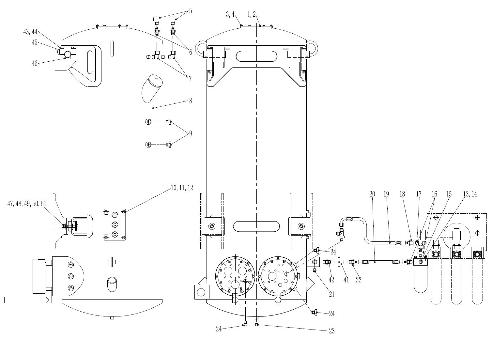
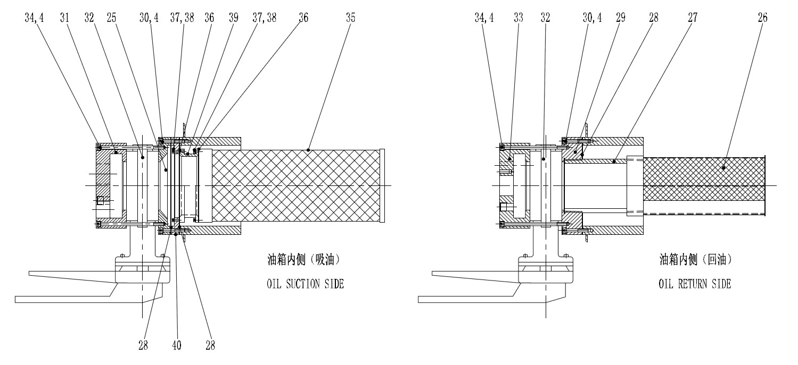

液压油箱及安装. · HYDRAULIC TANK AND MOUNTING
Спецификация1Крышка11Болт21Заглушка31Пластина всасывания масла41Шаровой клапан2О-кольцо12Шайба22Соединение32Ручной бабочковый клапан42Соединение3Болт13Болт23Магнитная пробка33Пластина возврата масла43Болт4Шайба14Пружинная подушка24Заглушка34Винт44Щайба5Дыхательный клапан15Фильтр25Фланец35Фильтр для всасывания масла45Прижимная планка6Соединение16Штуцер26Деаэратор обратного масла36Уплотнительная прокладка46Ограничительный блок7Угольник17Тройник27Резьбовая трубка37Винт47Болт8Сварной топливный бак в сборе18Прямой переходник28Уплотнительная прокладка38Шайба48Шайба9Оконная гайка19Шланг в сборе29Основание деаэратора обратного масла болт39Трубопровод фильтра для всасывания масла49Резиновая подкладка10Защитный кожух датчика20Шланг в сборе30Болт40Основание фильтра для всасывания масла50Гайка
Гидравлический бак
Общие сведения
Если не указано иное, номера позиций в скобках совпадают с номерами позиций на рис. 1.
Гидравлический бак расположен между передней и задней шинами, снаружи левой продольной балки рамы. Он имеет цилиндрическую форму и вертикально установлен на подставке.
Объем гидравлического масла в баке составляет около 383 галлона (1450 литров).
Две оконные гайки (9) размещены одна на боковой стороне бака, одна выше, другая ниже, чтобы указать уровень масла в гидравлическом баке.
Два клапана-бабочка с ручным приводом (32) устанавливаются на концах перепускного и всасывающего отверстий гидробака.
Датчик низкого уровня жидкости устанавливается на нижнем соединении корпуса бака.
Гидравлический бак заполняет гидравличесий бак с помощью узел быстрого заполнения маслом и проходит через узел фильтра заполнения (15), установленный на держателе фильтра, прежде чем гидравлическое масло поступает в гидравлический бак.
Примечание: гидравлический бак прикреплен к раме, что увеличивает его безопасность и срок службы.
Ремонт и регулировка
Периодический ремонт включает в себя следующие виды работ:
1. Проверить внешний вид гидравлического бака на наличие признаков повреждения или утечки. При необходимости отремонтировать или замените.
2. Проверить кронштейны. Они должны быть прочными и легкими в ремонте. Отрегулируйте, отремонтировать или при необходимостизамените.
3. Убедиться, что уплотнения масляных отверстий для заливки масла хорошо, чтобы предотвратить попадание загрязняющих веществ в гидравличесий бак. При необходимости отремонтировать или замените.
4. Убедиться, что фильтр (15) в маслозаправочном отверстии загрязнен ли и протекает ли. При необходимости отремонтировать или замените.
5. Проверить все входные и выходные трубы и маслозаправочные отверстия на наличие повреждений и простоты обслуживания. При необходимости отремонтировать или замените.
6. Убедиться, что респиратор (5) работает нормально или поврежден. При необходимости отремонтировать или замените.
7. Регулярно проверить внутреннюю часть гидравлического бака на наличие ржавчины, пыли или других загрязнений. Если обнаружены какие-либо признаки загрязнения, промойте бак и при необходимости Очистить его.
Снятие
Шаги снятия гидравлического бака следующие:
1. Поместить гидравлическое масло в баке в подходящий контейнер для чистки, это может быть выполнено с помощью передаточного насоса или другого подходящего устройства. Дренажный кран на дне каждого бака может слить оставшееся гидравлическое масло.
ВАЖНОЕ ПРИМЕЧАНИЕ: перед операцией сливания проверить уровень масла в баке и выберите соответствующий сливной контейнер.
ВАЖНОЕ ПРИМЕЧАНИЕ: гидравлическое масло в гидравлическом баке может быть высокотемпертурное. Избегайте прямого контакта с кожей во время процесса сливания во избежание травм.
2. Снять все трубки, соединенные с баком, и закройте или заблокируйте. Обозначить все снятые шланги для повторного подключения.
3. Снять все жгуты, соединенные с гидравлическим баком.
4. Демонтировать два болта, прокладку и гайку с нижней части.
5. Поддерживать гидравличесий бак так, чтобы монтажный кронштейн больше не держал, а гидравличесий бак закреплен так, чтобы гидравличесий бак не мог качаться при отпускании кронштейна.
6. Демонтировать два болта верхнего зажимного блока.
7. Снять всасывающий фильтр (33), промойте его керосином и высушите его сжатым воздухом, проверить на наличие повреждений, и при необходимости замените новый фильтр для всасывания (33).
8. Снять гидравличесий бак с карьерного самосвала.
Установка
Шаги снятия гидравлического бака следующие:
1. Перед установкой гидравлического бака на раму обязательно Очистить внутреннюю часть гидравлического бака. В противном случае перед установкой его необходимо очистить с помощью подходящего очищающего раствора.
ВАЖНОЕ ПРИМЕЧАНИЕ: чистка внутри гидравлического бака очень важная. В противном случае это может привести к неправильной работе гидравлической системы или сокращению срока службы компонентов.
2. Установить по обратным «Снятие» шагам.
3. После завершения установки проверить надежность соединений, таких как болты, швы и шланги.
Гидравлическая система – гидравлический бак
050-0020
Гидравлическая система – гидравлический бак
050-0020
2
2
Гидравлическая система – гидравлический бак
050-0020
1
Гидравлическая система – гидравлический бак
050-0020
2
SMC014 7-01 1
Гидравлическая система – гидравлический бак
050-0020
Гидравлическая система – гидравлический бак
050-0020
SMC014 7-01 3
3
Дополнения - Масса компонентов
200-0090
Дополнения - Масса компонентов
200-0090
4
5
Дополнения - Масса компонентов
200-0090
Внутреняя сторона бака (всасывание масла)
Внутреняя сторона бака (возврат масла)
Рисунок 1 - Структура узла гидравлического бака
Иллюстрации

